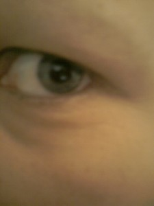
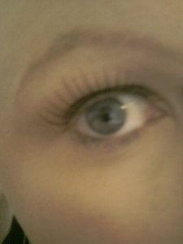

Thank you for all your comments…although I did say I wasn’t fishing for compliments! Although you’re hardly going to say “Oh my god you gave me a fright, you look like Uncle Fester!!” Good timing for Halloween anyway I guess!!
Now for some slightly more attractive photos (note, I say SLIGHTLY!!) I want to show you all 4 Caras…there’s me as me, as in bald is as good as it gets at the moment! There’s Jen my original trusty blonde wig which has been on here before (named by Anna after Jennifer Aniston FYI!) The ‘wig’ name for her was ‘Relentless’…Jen’s much better! Although relentless does describe what I’m going through very well, you can’t name her that! Notice how I refer to them as ‘her’ and ‘she’, don’t worry I haven’t gone crazy…well no more than I already was! Anyway then there’s Maria who I accidentally (I’m good at accidental shopping!) bought when trying her on for the style as I wanted this style in blonde (still do!) but then fell in love with her. She’s named after Maria in Coronation Street who’s hair is gorgeous and I’ve always loved! I love the curls and play with it non stop when I’m wearing her! The ‘wig’ name for her was Stevie! You can’t name a girl Stevie!! Then there’s another accidental purchase…Rachel…named after Rachel from Friends back in the day (Jennifer Aniston’s featuring highly here I know!) She was bought the day I got the good news about …hmmm hang on, which time was it?! I can’t even remember but I know there’d been some kind of glimmer of hope type news from Prof so again I went into the wig shop to search for Maria in blonde but tried her on and thought I deserved a ‘celebration wig’! She was supposed to be called Mia or something like that…
Wig shopping is the new clothes shopping when you don’t get out much and there’s a wig shop right there in the hospital! I go in nearly everytime I pass now and the lady in there knows me well! I’m always saying “oooh that one’s nice, have I tried that one on?!” Followed by a chorus of “YES!” from Goose and the lady who works in there! I always end up trying them on again though! My search for Holly (Holly Willoughby who I LOVE!! I’m on a mission to meet her!) continues…when she has her hair curly, that’s what I want soooooo much! It’s just a LOT more pricey than clothes shopping however…there’s no Primark in the world of wigs!
Anyway so here they all are…I slapped on my make up (literally!), secured my false eyelashes (although obviously not well enough as one fell off whilst Chris and I had dinner in the pub last night! Why doesn’t that ever happen to Cheryl Cole who’s CLEARLY wearing them at all times?! Maybe money & fame can buy you superglue for eyelashes?!) and had a mini photo shoot with Goose with me bald, Jen, Maria and Rachel! Check out my eyelashes!…(mine have fallen out from the chemo)
 
Jen:
Maria:
Rachel:
Right, please let me know which is your favourite!! Don’t say bald just because you feel you should! I’m interested to know which wig is the favourite! So even if you’re reading and you don’t usually comment, just write on here which Cara you prefer!!
…on that note, people keep telling me of people who are reading this site but not commenting as they don’t feel they know me well enough or know me at all! I’m intrigued to know who’s reading & I really don’t mind if you haven’t seen me since I was a little scamp or even if you’ve never met me, just write a comment, I won’t bite! I’ll honestly be happy to read a comment from anyone, it’d be good to know who’s reading!
Right, cast your vote now…Jen, Maria or Rachel (or bald but probably not!) xxx
P.S. I apologise for the awful appearance of this post…I cannot work out how to sort it out…I get it all lined up and in the right place on my admin part of the site and then when I post it on the site it all jumps around and puts in a million gaps! Sorry! Hope you can make sense of it! x
Maria Maria Marrrrrrriiiiiiiiiiaaaaaaaaaaaaa is my favourite!!!
I want my hair to by like that! Especially for the wedding! So whilst we’re walking down the grand stairs, maybe if you’re walking in front I could whip it off and put it on my head!!!! NO, I’d NEVER do that to you! Although it is a kind of funny though!!!
We finally ordered our save the dates btw. I keep wanting to abbreviate it to STD and then realise that means something else! LOL!! Yours will be hand delivered as soon as the ink is dry, although they might be awful so we might hate them!!
Any way Chief Wiggly, I’m off.
Love you. xxxxxxxxxxxxxxxxxxxxxx
P.S. I LOVED what Holly said about Ethan on Xtra Factor yesterday, did you see that bit? It was hilarious. I think you and Holly look quite similar and sometimes you sound the same!!